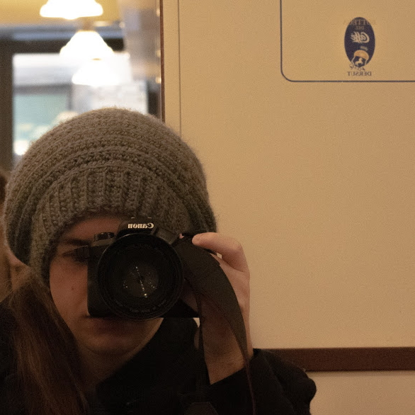
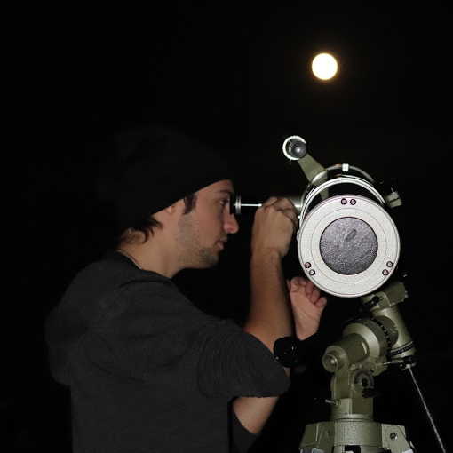
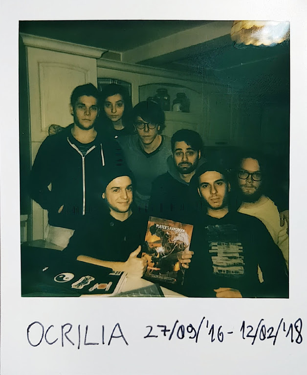
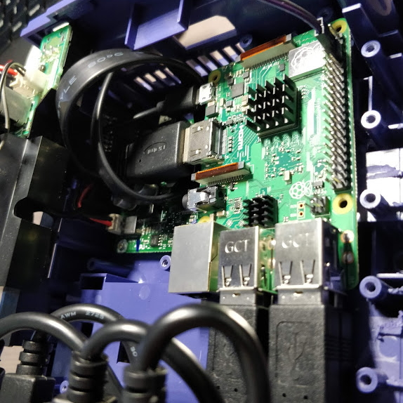

Computer science
Graduated in computer science at the University of Pisa after attending E. Fermi high school in Lucca.
01 / PROFILE · LUCCA, ITALY
I'm Federico Matteoni: a software engineer drawn to astronomy, computers, and the joy of figuring out how things work.
I like to explore ideas from both sides—understanding them in the abstract, then experimenting and building something with what I learn.
THE PATH SO FAR
Graduated in computer science at the University of Pisa after attending E. Fermi high school in Lucca.
Started working as a mobile software engineer at Garmin Italy Technologies, alongside further studies in artificial intelligence.
BEYOND THE SCREEN
Different ways to explore, imagine, and make.

Capture the way I see the world, and immortalize what peaks my curiosity

The cosmos waits only for our questions and observations

Create worlds, share stories, build memories

Curiosity turns ideas to (sometimes) working stuff